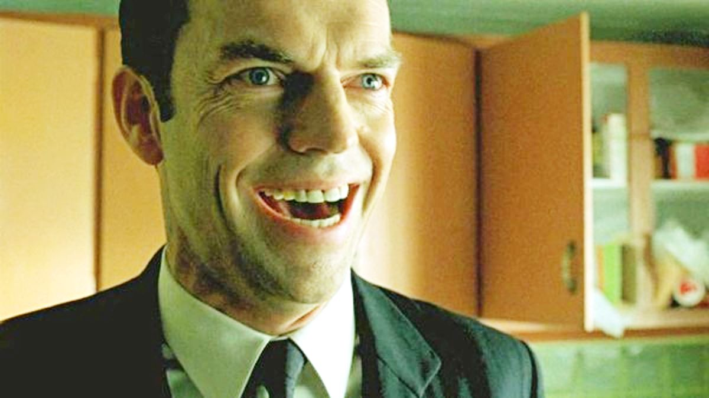
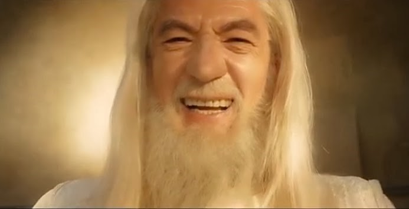

Everyone we know has a distinctive, memorable laugh—if we recorded a hundred people laughing, we’d have a hundred different laughs. Despite this, we almost never hear distinctive laughs in movies, unless they’re part of a gag.
That's because it’s hard to act or fake laughter. This is why most characters have forgettable, unremarkable laughs (“hah!” or “hahahaha!”) that aren’t particularly realistic or memorable—it’s just the imitative laughter that’s possible to act out.
> Consider:
It’s hard to do our laugh on command—and it’s exponentially harder to do someone else’s laugh on command. We can often caricature someone else’s laugh, but we can’t reliably mimic them as easily as some people can mimic speaking voices.
The exception to generic acted laughs are noises that are used for emotional shortcuts. These are surreal, laugh-like noises that are self-referential, like:
an evil man laugh (Mwah-haha!)
an evil woman cackle (“EEheeheehee!”)
a good old man chuckle (“ho ho ho”)
deranged laughter (“ha ha ha ha ha!”)
mocking laughter (“haw haw haw”)
an around-the-dinner-table laugh (“ah hah haha”)
an end-of-the-movie silent laugh (*head shakes in happiness as they open their mouth and laugh in slow silent motion*)
(and so on)


The audience registers these noises as laughter by convention, not because they’re particularly realistic. These laugh-like noises are just part of a spectator humor profile that we’ve all gotten used to.
We do the same thing in our day-to-day lives—if we go “mwah-haha!”, we aren’t really laughing—we’re just making a noise as an emotional or narrative shortcut:
Emma and Owen are playing a racing game. Owen cuts her off.
Emma: (pissed) “Bastard!”
Owen: (amused) “Mwah-haha!” (←Emma registers this as a humor tell, but not as a laugh)
Emma doesn’t think “mwah-haha” is a real laugh—just like she doesn’t think of it as a real laugh when done in movies. It’s more like a verbal emoji than a laugh.
Memorable laughs. Some characters have memorable humor tells, like
Han Solo’s lopsided smile
Fox Mulder’s enthusiastic grin
James Bond’s smirk
Harry Potter’s shy smile
(and so on)
But even though these humor tells are memorable, they're not laughs—and we’ll struggle to remember scenes where those characters gave medium-intensity or higher laughs.
If a scene does come to mind, we’ll probably either not really remember the sound of the laugh itself—or remember the sound as not particularly convincing. That’s because it’s hard to act laughter on command!